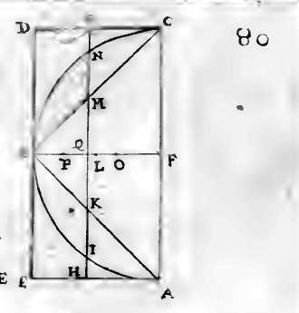

Proposition XIII: Center of Gravity of a Hemisphere (5:3)¶


Proposition XIII · Theorem XIII (pp. 77–78, Tab. 10, Fig. 80)
The center of gravity of a hemisphere is that point in which the axis is so divided that the part which is toward the vertex is to the remaining part as 5 to 3.
Let there be a hemisphere ABC, and let its axis FB be cut at O, so that BO has to OF that ratio which 5 has to 3. I say that point O is the center of gravity of the said hemisphere. On the same base AC and around the same axis BF let there be conceived cylinder AD, and likewise cone EFD whose base is ED; and let these solids be cut by the same plane HIKMNG parallel to base AC or ED. Now it is evident that axis BF passes through the center of all circles AC, HG, ED of cylinder AD; and likewise that the same axis passes through the centers of all circles of cone DFE and of hemisphere CBA; and because circle ED is equal and concentric to itself; likewise circle HG is equal to the two circles NI, MK concentric with it (for rectangle HNG, that is square GC or FQ or QM, together with square QN equals square QG), and finally circle AC equals itself; there will be on axis BF, as on a balance-beam, at point B the same weight, whether circle ED of cylinder DA be suspended there, or circle DE of cone DFE weigh down at the same point; and by the same reasoning there will be at point Q the same gravity, whether circle HG of cylinder EC be suspended from that point, or the magnitude composed of the two circles KM, NI of the cone and the hemisphere. Finally, because circle AC of the cylinder weighs equally at F as circle AC itself of the hemisphere, it is clearly evident that all circles ED, HG, AC, etc. of cylinder EC obtain the same center of gravity as the composite of all circles ED, KM, etc. of the cone and all IN, AC, etc. of the hemisphere; that is, it is evident that cylinder EC is concentric
f. 0095 · p. 78with the composite magnitude made of cone DFE and hemisphere CBA remaining in that described position. Therefore, at point L, the midpoint of axis BF, will be the center of gravity of the said composite magnitude; and once BP is taken as half of BL, namely the fourth part of BF (margin: Luca Valerio, De centro gravitatis I.39), it is evident that point P is the center of gravity of cone DFE.
Since however BO is to OF as 5 to 3, BF will be to FO as 8 to 3, and to LO as 8 to 1; wherefore BL to LO will be as 4 to 1, and PL to LO as 2 to 1; and cone DFE is to hemisphere CBA as 1 to 2; therefore, since inversely as cone DFE is to hemisphere CBA, so is length OL to LP, it is clear that point O is the center of gravity of hemisphere CBA, which was to be demonstrated.
SCHOLIUM.
By altogether the same reasoning which we used above, the center of gravity of a hyperbolic conoid is found, namely with attention to the eleventh proposition of this appendix, or even the twelfth.